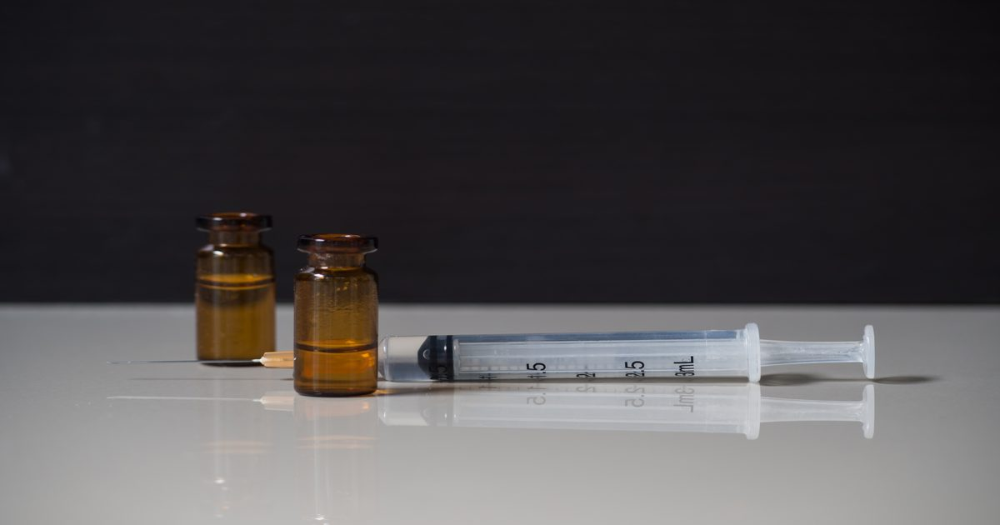

Роль кетамина в предполагаемом изнасиловании в Корнелле подчеркивает поток психоактивных препаратов в кампусе
Кетамин и многие другие психоактивные вещества не могут быть обнаружены с помощью большинства стандартных скринингов на наркотики, поэтому неясно, как часто они играют роль в сексуальном насилии.
Сообщение о роли кетамина в предполагаемом изнасиловании в Корнелле подчеркивает поток психоактивных веществ в кампусе, впервые появилось на Nautilus.